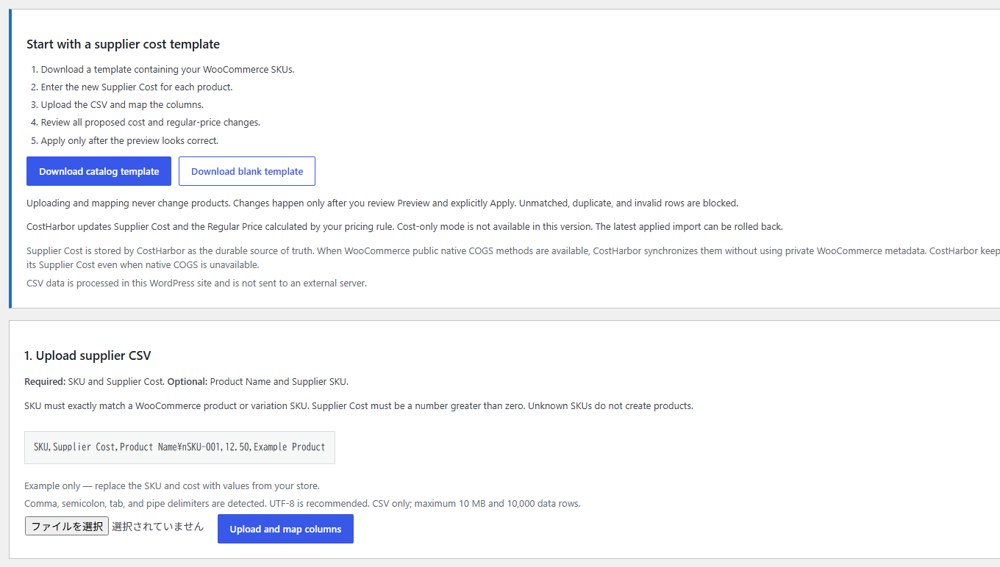
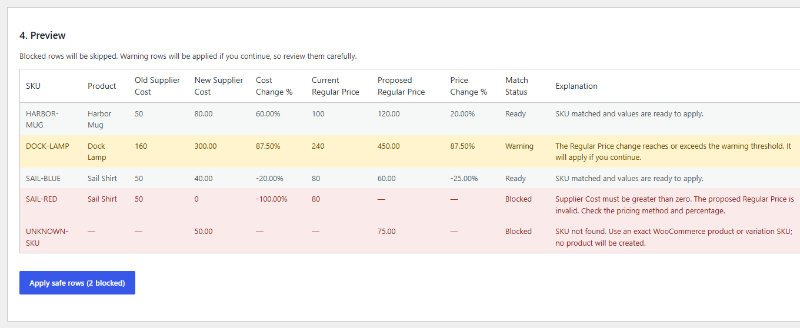
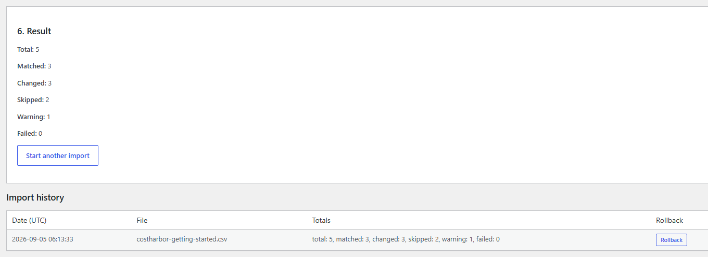
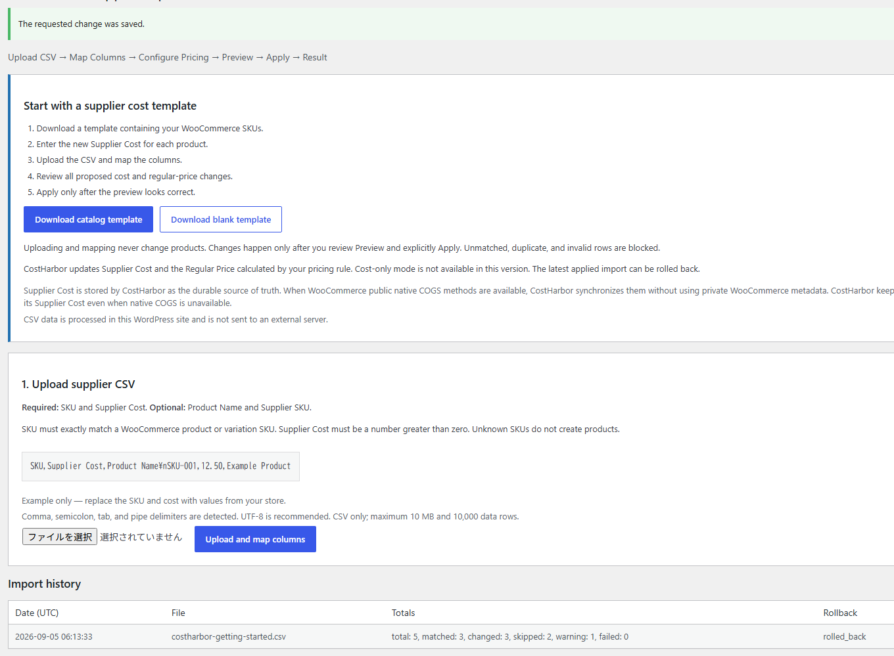

Before you begin
CostHarbor is for an existing WooCommerce catalog where each product or variation you want to update has a unique SKU. Your supplier file needs at least an SKU column and a positive Supplier Cost column.
1. Install and open CostHarbor
- Install and activate WooCommerce.
- Install and activate CostHarbor from WordPress.org.
- In WordPress Admin, open WooCommerce → CostHarbor Supplier Updates for WooCommerce.
The first screen explains the no-write-before-Apply workflow and provides catalog and blank templates.

2. Download the catalog template and enter costs
Choose Download catalog template. CostHarbor generates a UTF-8 CSV containing the SKU and product name for existing simple products and variations. Existing CostHarbor Supplier Cost values are included when available. Enter the new Supplier Cost only for the rows you intend to review.
SKU,Supplier Cost,Product Name
HARBOR-MUG,80.00,Harbor Mug
DOCK-LAMP,300.00,Dock LampThe catalog template is the recommended route for a real store because its SKUs come from that store. The downloadable test CSV below uses fictional products and is intended for a disposable test catalog.
3. Upload, map, and choose a pricing rule
- Upload the CSV.
- Map SKU and Supplier Cost. Product Name and Supplier SKU are optional.
- Choose Markup % or Target Margin %.
- Enter the percentage and the absolute Regular Price change that should trigger a warning.
- Choose Build preview.
The reproducible example on this page uses Markup 50% and a 50% warning threshold. The formula is Supplier Cost × 1.5.
4. Read the Preview
Preview is the decision point. It shows old and new Supplier Cost, current and proposed Regular Price, percentage changes, match status, and an explanation for every row.
The SKU matched and the row can be applied.
The price movement reached the configured threshold. It will still be applied if you explicitly continue.
The row is invalid, unmatched, duplicate, or ambiguous. It is skipped during Apply.

| SKU | Old cost | New cost | Old price | Proposed price | Preview status |
|---|---|---|---|---|---|
| HARBOR-MUG | 50 | 80 | 100 | 120 | Ready |
| DOCK-LAMP | 160 | 300 | 240 | 450 | Warning (+87.50%) |
| SAIL-BLUE | 50 | 40 | 80 | 60 | Ready |
| SAIL-RED | 50 | 0 | 80 | — | Blocked: cost must be positive |
| UNKNOWN-SKU | — | 50 | — | 75 | Blocked: SKU not found |
5. Apply reviewed rows
When the Preview is correct, choose Apply safe rows. In this example, the two Ready rows and the acknowledged Warning row are applied. The two Blocked rows are skipped.

6. Roll back the latest import
Use Rollback in Import History to restore the Supplier Cost and Regular Price saved for the latest applied import. Rollback does not restore the entire site and does not change titles, stock, sale prices, categories, or unrelated metadata.

rolled_back after its recorded cost and regular-price values are restored.Limits and support
- CSV only; XLSX is not supported.
- Maximum 10 MB and 10,000 data rows.
- Comma, semicolon, tab, and pipe delimiters are detected. UTF-8 is recommended.
- Exact product or variation SKU matching; no fuzzy matching and no product creation.
- Supplier Cost must be a supported number greater than zero.
- No Cost-only mode, scheduled imports, remote URL imports, supplier API, or currency conversion.
- CostHarbor retains its own Supplier Cost and synchronizes through WooCommerce public native COGS methods when available.
- CSV and store data are processed inside WordPress and are not sent to an external server.